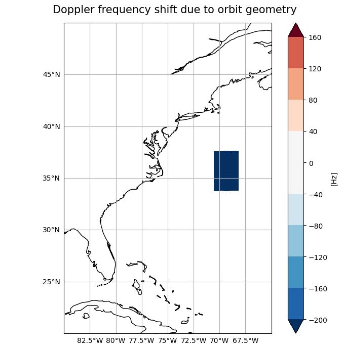
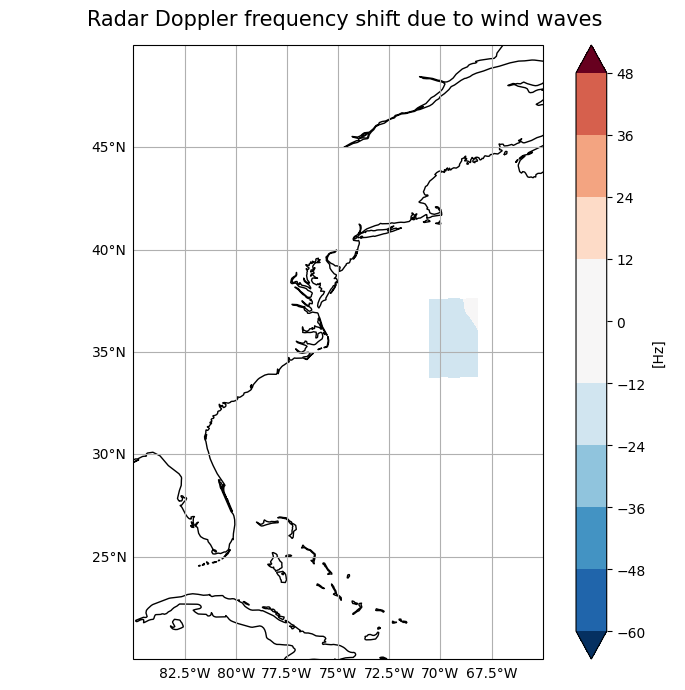

Plot Data on a Map#
Work in progress notebook#
import xarray as xr
ds = xr.open_dataset('https://thredds.met.no/thredds/dodsC/remotesensingenvisat/asar-doppler/2012/01/27/ASA_WSDV2PRNMI20120127_215005_000612433111_00101_51839_0000.nc')
ds
<xarray.Dataset> Size: 39MB
Dimensions: (y: 602, x: 851)
Dimensions without coordinates: y, x
Data variables: (12/19)
sensor_view_angle (y, x) float32 2MB ...
incidence_angle (y, x) float32 2MB ...
sensor_azimuth (y, x) float32 2MB ...
sigma0_VV (y, x) float32 2MB ...
topographic_height (y, x) float32 2MB ...
valid_land_doppler (y, x) float32 2MB ...
... ...
u_range (y, x) float32 2MB ...
std_u_range (y, x) float32 2MB ...
wind_direction (y, x) float32 2MB ...
wind_speed (y, x) float32 2MB ...
longitude (y, x) float32 2MB ...
latitude (y, x) float32 2MB ...
Attributes: (12/75)
GDAL: GDAL 3.2.1, released 2020/12/29
acknowledgement: GSAR IDL pre-processing software was develope...
azimuth_start_time: 2012-01-27T21:50:05.173597
contributor_email: jeong-won.park@kopri.re.kr, hjoh@norceresearc...
contributor_institution: Korea Polar Research Institute (KOPRI), NORCE...
contributor_name: Jeong-Won Park, Harald Johnsen, Geir Engen
... ...
ysamplefreq_slc: 1711.9144385026736
ysize: 629
ytime: 2012-01-27T21:50:05.173597Z
ytime_slc: 2012-01-27T21:50:04.077748
summary_no: Kalibrert geofysisk Dopplerskift fra ENVISAT ...
title_no: Kalibrert geofysisk ENVISAT ASAR Dopplerskift...ds.sigma0_VV.plot()
<matplotlib.collections.QuadMesh at 0x71d90b98cfd0>

# how to open data when downloaded from the staging page: https://data-staging.met.no/metsis/elements/no-met-staging-e19b9c36-a9dc-4e13-8827-c998b9045b54/search
import os
import glob
import xarray as xr
import pandas as pd
import matplotlib.pyplot as plt
import numpy as np
import cartopy.crs as ccrs
from cartopy.mpl.gridliner import LONGITUDE_FORMATTER, LATITUDE_FORMATTER
from matplotlib.colors import TwoSlopeNorm
# Get the path of the home directory
home_dir = os.path.expanduser("~")
# Use os.path.join to combine paths
path2files = os.path.join(home_dir, "Downloads") # "Dowloads" --> path to files
# 'ASA_WSDV2PRNMI20120314_023113_000605493112_00334_52503_0000.nc'
desired_files_paths = glob.glob(os.path.join(path2files, "ASA_*.nc"))
print(desired_files_paths)
#'''
files2open = []
for i in range(len(desired_files_paths)):
ith_file = desired_files_paths[i].replace(path2files+'/', '')
print(ith_file)
files2open.append(ith_file)
print(files2open)
#'''
ds = xr.open_dataset(desired_files_paths[0]) # Figure out how to just be able to find downloads whenever...
print(desired_files_paths[0])
ds
['/home/josteines/Downloads/ASA_WSDH2PRNMI20120309_100514_000624363112_00266_52435_0000.nc', '/home/josteines/Downloads/ASA_WSDV2PRNMI20120314_023113_000605493112_00334_52503_0000.nc']
ASA_WSDH2PRNMI20120309_100514_000624363112_00266_52435_0000.nc
ASA_WSDV2PRNMI20120314_023113_000605493112_00334_52503_0000.nc
['ASA_WSDH2PRNMI20120309_100514_000624363112_00266_52435_0000.nc', 'ASA_WSDV2PRNMI20120314_023113_000605493112_00334_52503_0000.nc']
/home/josteines/Downloads/ASA_WSDH2PRNMI20120309_100514_000624363112_00266_52435_0000.nc
<xarray.Dataset> Size: 37MB
Dimensions: (y: 637, x: 860)
Dimensions without coordinates: y, x
Data variables: (12/17)
sensor_view_angle (y, x) float32 2MB ...
incidence_angle (y, x) float32 2MB ...
sensor_azimuth (y, x) float32 2MB ...
sigma0_HH (y, x) float32 2MB ...
topographic_height (y, x) float32 2MB ...
valid_land_doppler (y, x) float32 2MB ...
... ...
fww (y, x) float32 2MB ...
std_fww (y, x) float32 2MB ...
wind_direction (y, x) float32 2MB ...
wind_speed (y, x) float32 2MB ...
longitude (y, x) float32 2MB ...
latitude (y, x) float32 2MB ...
Attributes: (12/74)
GDAL: GDAL 3.2.1, released 2020/12/29
acknowledgement: GSAR IDL pre-processing software was develope...
azimuth_start_time: 2012-03-09T10:05:14.216624
contributor_email: jeong-won.park@kopri.re.kr, hjoh@norceresearc...
contributor_institution: Korea Polar Research Institute (KOPRI), NORCE...
contributor_name: Jeong-Won Park, Harald Johnsen, Geir Engen
... ...
ysamplefreq_slc: 1698.5921471524584
ysize: 635
ytime: 2012-03-09T10:05:14.216624Z
ytime_slc: 2012-03-09T10:05:13.055074
summary_no: Kalibrert geofysisk Dopplerskift fra ENVISAT ...
title_no: Kalibrert geofysisk ENVISAT ASAR Dopplerskift...ds = xr.open_dataset('ASA_WSDV2PRNMI20120314_023113_000605493112_00334_52503_0000.nc')
ds
<xarray.Dataset> Size: 35MB
Dimensions: (y: 596, x: 856)
Dimensions without coordinates: y, x
Data variables: (12/17)
sensor_view_angle (y, x) float32 2MB ...
incidence_angle (y, x) float32 2MB ...
sensor_azimuth (y, x) float32 2MB ...
sigma0_VV (y, x) float32 2MB ...
topographic_height (y, x) float32 2MB ...
valid_land_doppler (y, x) float32 2MB ...
... ...
fww (y, x) float32 2MB ...
std_fww (y, x) float32 2MB ...
wind_direction (y, x) float32 2MB ...
wind_speed (y, x) float32 2MB ...
longitude (y, x) float32 2MB ...
latitude (y, x) float32 2MB ...
Attributes: (12/74)
GDAL: GDAL 3.2.1, released 2020/12/29
acknowledgement: GSAR IDL pre-processing software was develope...
azimuth_start_time: 2012-03-14T02:31:13.866806
contributor_email: jeong-won.park@kopri.re.kr, hjoh@norceresearc...
contributor_institution: Korea Polar Research Institute (KOPRI), NORCE...
contributor_name: Jeong-Won Park, Harald Johnsen, Geir Engen
... ...
ysamplefreq_slc: 1711.9144385026736
ysize: 619
ytime: 2012-03-14T02:31:13.866806Z
ytime_slc: 2012-03-14T02:31:13.054265
summary_no: Kalibrert geofysisk Dopplerskift fra ENVISAT ...
title_no: Kalibrert geofysisk ENVISAT ASAR Dopplerskift...ds.fdg
<xarray.DataArray 'fdg' (y: 596, x: 856)> Size: 2MB
[510176 values with dtype=float32]
Dimensions without coordinates: y, x
Attributes:
long_name: Radar Doppler frequency shift due to surface velocity
colormap: cmocean.cm.balance
dataType: 6
minmax: -60 60
name: fdg
offset_corrected: False
SourceBand: 11
SourceFilename: /vsimem/V5J1Q4R864.vrt
units: Hz# Assuming ds is your Dataset - This was when I thought the longitude spanned from 0 to 360. It clearly doesn't....
# ds['x'] = xr.where(ds['x'] > 180, ds['x'] - 360, ds['x'])
# Now select your slice
variable = ds.fdg.sel(x=slice(-140, -100), y=slice(0, 90))
fig, ax = plt.subplots(1, figsize=(10, 6))
fig.suptitle(f'{variable.long_name}', fontsize = 30)
ax.axis('off')
ax = plt.axes(projection=ccrs.PlateCarree())
ax.coastlines()
# Adding latitude and longitude gridlines
gl = ax.gridlines(draw_labels=True)
# This handles the labels (North, South, East, West)
gl.xformatter = LONGITUDE_FORMATTER
gl.yformatter = LATITUDE_FORMATTER
# gl.xlocator = mticker.FixedLocator([-180, -120, -60, 0, 60, 120, 180])
# gl.ylocator = mticker.FixedLocator([-90, -60, -30, 0, 30, 60, 90])
levels_step = 10
# levels_max = round(float(ds.fdg.max()))
levels_max = 60
# levels_min = round(float(ds.fdg.min()))
levels_min = -60
variable.plot.contourf(ax=ax, x='x', y='y',
extend = 'both', # 'neiter', 'upper', 'lower'
norm = TwoSlopeNorm(vmin = levels_min, vcenter = 0, vmax = levels_max),
levels = np.arange(levels_min, levels_max, levels_step)
# cbar_kwargs = {'label': f'{ds.fdg.units}'}
)
# ax.set_ylim(round(ds.geospatial_lat_min), round(ds.geospatial_lat_max))
# ax.set_xlim(round(ds.geospatial_lon_min), round(ds.geospatial_lon_max))S
plt.tight_layout()

ds.fdg.max()
<xarray.DataArray 'fdg' ()> Size: 4B array(40.540764, dtype=float32)
ds.fdg.min()
<xarray.DataArray 'fdg' ()> Size: 4B array(-99.936935, dtype=float32)
round(ds.geospatial_lat_max)
ds.geospatial_lat_max
37.593555
round(ds.geospatial_lat_min)
34
round(float(ds.fdg.max()))
41
ds.fdg.mean()
<xarray.DataArray 'fdg' ()> Size: 4B array(0.08740078, dtype=float32)
ds.x
<xarray.DataArray 'x' (x: 856)> Size: 7kB array([ 0, 1, 2, ..., 853, 854, 855]) Dimensions without coordinates: x
# plt.contourf(ds.valid_land_doppler)
def plotting_variables_on_a_map(variable, lat_min, lat_max, lon_min, lon_max): # var_min, var_max, var_step
# Define the extent of your data
# lat_min, lat_max = 20, 50 # replace with your actual values
# lon_min, lon_max = -85, -65 # replace with your actual values
# Create a linear space for latitude and longitude
lat = np.linspace(ds.geospatial_lat_min, ds.geospatial_lat_max, ds.sizes['y'])
lon = np.linspace(ds.geospatial_lon_min, ds.geospatial_lon_max, ds.sizes['x'])
# variable = ds.fdg
# Create a new xarray DataArray with latitude and longitude as coordinates
variable_with_coords = xr.DataArray(variable.values, coords=[('lat', lat), ('lon', lon)], dims=['y', 'x'])
# Assign variable attributes from the original variable DataArray
variable_with_coords.attrs = variable.attrs
# Assign global attributes from the original Dataset as a new attribute in the DataArray
# variable_with_coords.attrs = ds.attrs # I THINK THIS OVERRIDES THE VARIABLE ATTRIBUTES...
# Now select your slice - defined by the latitudinal and longitudinal extent of the data
plotable_variable = variable_with_coords.sel(x=slice(ds.geospatial_lon_min, ds.geospatial_lon_max), y=slice(ds.geospatial_lat_min, ds.geospatial_lat_max))
# Ready to plot the variable on a map using subplot package of matplotlib.pyplot
fig, ax = plt.subplots(1, figsize=(7, 7))
fig.suptitle(f'{plotable_variable.long_name}', fontsize = 15)
ax.axis('off')
# Set the projection
ax = plt.axes(projection=ccrs.PlateCarree())
ax.coastlines()
# Create the gridlines and configure the labels
gl = ax.gridlines(draw_labels=True)
gl.top_labels = False
gl.right_labels = False
# Defining var_min, var_max and var_step --- using the variable attribute minmax to extract var_min and var_max
var_min = int(plotable_variable.minmax.split(' ')[0])
var_max = int(plotable_variable.minmax.split(' ')[1])
var_step = ((var_max - var_min)/10)
var_max = int(plotable_variable.minmax.split(' ')[1]) + var_step # redefining the max val to makes the plot nicer around center
# Plot the data
plotable_variable.plot.contourf(ax=ax, x='x', y='y',
extend='both',
norm=TwoSlopeNorm(vmin=var_min, vcenter=0, vmax=var_max),
levels=np.arange(int(plotable_variable.minmax.split(' ')[0]), int(plotable_variable.minmax.split(' ')[1]), var_step),
cbar_kwargs = {'label': f'[{plotable_variable.units}]'}
)
# Setting the extent on the map that is plotted
ax.set_ylim(lat_min, lat_max)
ax.set_xlim(lon_min, lon_max)
plt.tight_layout()
plt.show()
plotting_variables_on_a_map(variable = ds.fdg,
lat_min = 20, lat_max = 50,
lon_min = -85, lon_max = -65
# var_min = int(ds.fdg.minmax.split(' ')[0]), var_max = int(ds.fdg.minmax.split(' ')[1]), # do not need to define this in the end
# var_step = 10
)

plotting_variables_on_a_map(variable = ds.fgeo,
lat_min = 20, lat_max = 50,
lon_min = -85, lon_max = -65
# var_min = int(ds.fdg.minmax.split(' ')[0]), var_max = int(ds.fdg.minmax.split(' ')[1]), # do not need to define this in the end
# var_step = 10
)

plotting_variables_on_a_map(variable = ds.fww,
lat_min = 20, lat_max = 50,
lon_min = -85, lon_max = -65
# var_min = int(ds.fdg.minmax.split(' ')[0]), var_max = int(ds.fdg.minmax.split(' ')[1]), # do not need to define this in the end
# var_step = 10
)

ds
<xarray.Dataset> Size: 35MB
Dimensions: (y: 596, x: 856)
Dimensions without coordinates: y, x
Data variables: (12/17)
sensor_view_angle (y, x) float32 2MB ...
incidence_angle (y, x) float32 2MB ...
sensor_azimuth (y, x) float32 2MB ...
sigma0_VV (y, x) float32 2MB ...
topographic_height (y, x) float32 2MB ...
valid_land_doppler (y, x) float32 2MB ...
... ...
fww (y, x) float32 2MB -15.74 -15.75 ... -10.43 -10.43
std_fww (y, x) float32 2MB ...
wind_direction (y, x) float32 2MB ...
wind_speed (y, x) float32 2MB ...
longitude (y, x) float32 2MB ...
latitude (y, x) float32 2MB ...
Attributes: (12/74)
GDAL: GDAL 3.2.1, released 2020/12/29
acknowledgement: GSAR IDL pre-processing software was develope...
azimuth_start_time: 2012-03-14T02:31:13.866806
contributor_email: jeong-won.park@kopri.re.kr, hjoh@norceresearc...
contributor_institution: Korea Polar Research Institute (KOPRI), NORCE...
contributor_name: Jeong-Won Park, Harald Johnsen, Geir Engen
... ...
ysamplefreq_slc: 1711.9144385026736
ysize: 619
ytime: 2012-03-14T02:31:13.866806Z
ytime_slc: 2012-03-14T02:31:13.054265
summary_no: Kalibrert geofysisk Dopplerskift fra ENVISAT ...
title_no: Kalibrert geofysisk ENVISAT ASAR Dopplerskift...